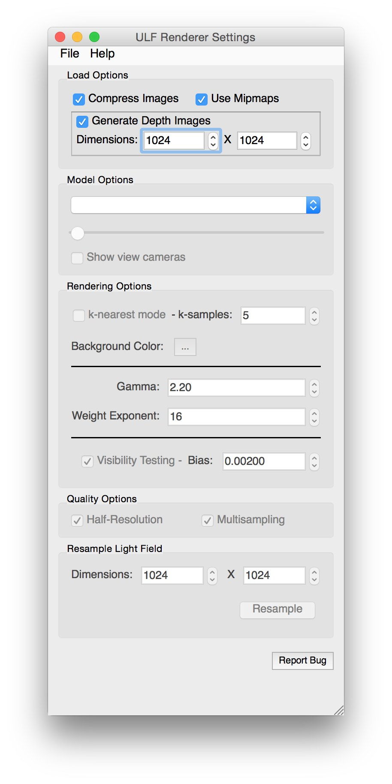

User Interface and Window Guide
This page describes all the windows and pieces of the user interface and how they work. You can learn about menu options, controlling the model and changing the settings for the renderer.
Main Model Window
Once a model is loaded, you can interact with the object as you would with most objects in other 3d programs. This is often referred to as a ‘trackball’ controller
Controls
- Click and drag to rotate around the object’s center
- Use the mouse scroll wheel to zoom in and out
Settings Window
File & Help Menus
- Models can be loaded from the 'File' menu (or you can quit the program).
- You can access this help and information about the program from this menu.
|
Loading Options
- Compress Images - Apply texture compression to the images as they are being loaded. This will reduce memory usage significantly but may result in some visual artifacts
- Use Mipmaps - Generate mipmap levels for every view. This increases memory usage but may help eliminate some visual artifacts that are the result of image resampling
- Generate Depth Maps - If the model has some parts that could cast a shadow on itself or otherwise obstruct the surface than the depth maps will help it render properly. If the model does not have these features you may safely uncheck this box and reduce memory usage.
- Dimensions - The resolution of the depth images. Only applied if the 'generate depth images' option is enabled
Model Options
- The first drop down box lets you select the currently active model if more than one has been loaded
- The slider is used to move through the stages of a model sequence. This will only be enabled if there are stages to move through.
- Show View Cameras - Visualize the location and orientation of the cameras. Handy for double-checking that the video information was loaded properly.
|

|
Rendering Options
- K-nearest mode - Blend only the 'k' nearest neighbors of highest weight as in the original Beuhler algorithm. This may help speed up rendering.
- 'k-samples' - Set the 'k' value used by the Beuhler algorithm. Lower is faster but the value cannot be less than 2
- Background Color - Change the color of the background in the main window. It defaults to a 30% grey value.
- Gamma - correction applied for non-linear image response curves (based on a standard gamma function).
- Weight Exponent - The 'alpha' value from the weight equation. Increasing this causes more views to be used at each point but will introduce blurryness. Decreasing it will force the views to have a zero effect sooner and results in sharper images.
- Visibility Testing - Enable this option to eliminate views bleeding through onto parts of the geometry that they could not see. Depth images are required for this to work.
- Bias - Minimum value for detecting a difference between the depth in the depth image and the value in the current view. Make this small to help get less bleeding across visibility discontinunities. Increase it to eliminate more bleeding.
Quality Options
- Half-Resolution - Cut the number of pixels generated in half to help speed up rendering. This is meant to help with High-DPI displays and should be enabled if you have a retina display
- Multisampling - Disable OpenGL multisampling. This will also help speed up rendering but causes some jagged lines to appear at the edge of the model.
Resample Model
- This is a special mode that allows you to resample all the views of a model so that they match some other set of views. You must have the target views ready in a .vset file. It is intended for internal use only.
- Dimensions - Specify the resolution of the resampled images
- Resample - Start resampling. You will be prompted for a target vset file.
Reporting Bugs
- At any time you can click the 'report bug' button to send a manual bug report. This will take a screenshot and then generate and upload a 'crash report'. Note that you should be sure to describe the issue in detail as the crash report will not be very helpful otherwise.
|